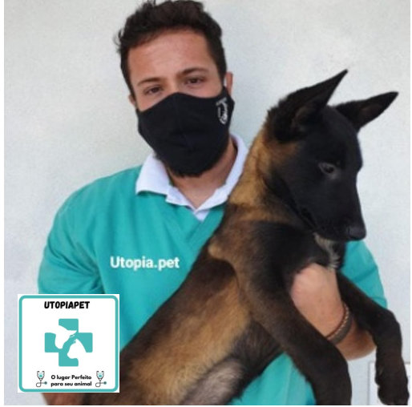

-
Paulo Ribeiro da Silva Junior
-
Paulo Ribeiro da Silva
Junior é nosso médico Veterinário.
-
Paulo se formou em 2020 na
faculdade UniFAJ.
-
Durante sua formação se
especializou em reprodução canina, participando de diversos cursos
de especialização em reprodução.
-
Paulo possui
especialização em cursos em análise, interpretação e avaliação da
composição básica de alimentos industrializados para cães e gatos.
-
Trabalhou 2 anos na
Unidade de Vigilância de Zoonose de Jaguariúna-SP. Trabalhou 2
anos em laboratório de morfologia.
-
Em 2016 se habilitou como
criador, buscando o aprimoramento genético de cães, alimentação e
saúde.
-
Paulo atende nas seguintes
áreas:
- Clinico geral
- Cirurgia
- Fisioterapia
- Acupuntura
- Vacinação
- Microchipagem
- Entre outros.
